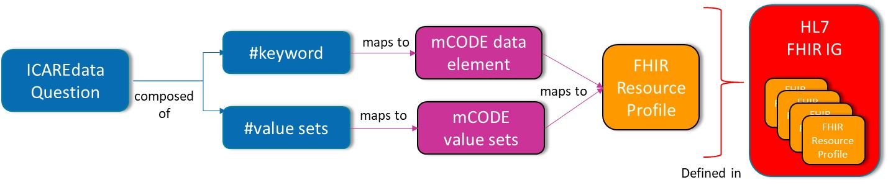

CodeX Implementation Guide: iCAREdata v0.1
Publish Box goes here
The overall goal of the ICAREdata® project is to support the prospective collection of high quality real-world data, based on mCODE™, to enable clinical oncology research.
The Integrating Clinical trials And Real-world Endpoints data (ICAREdata®) project is a collaboration between The MITRE Corporation, the Alliance for Clinical Trials in Oncology, and the National Cancer Institute (NCI). The project is conducting a study to demonstrate the ability to use high-quality mCODE-based real-world data in a clinical trial setting.
This implementation guide intends to cover content necessary for ICAREdata® that is not part of the mCODE™ specification. Implementers should refer directly to mCODE™ for the specification of all mCODE™ elements.
The mCODE™ implementation guide includes information on how to interpret conformance requirements as well as elements marked as "must support". This implementation guide follows those same guidelines.
The ICAREdata® strategy is to collect improved real-world data in a way does not disrupt existing clinical processes and minimizes burden to the provider while enabling the collection of complete, accurate, and computable data. ICAREdata® questions are answered by clinicians with the results appearing as structured (#hashtag) phrases in the clinical note.
ICAREdata® structured phrases questions and value sets are intended to be mapped to FHIR resources compliant with the requirements specified in the mCODE™ and ICAREdata® implementation guides. This includes mapping 1) the ICAREdata® question to the appropriate FHIR resource and element, and 2) the associated value to the appropriate vocabulary defined in the specification.
The figure below illustrates how ICAREdata® structured phrases relate to FHIR profiles and implementation guides.
For details on mapping guidance for specific ICAREdata® structured phrases, please consult ICAREdata® to FHIR mapping guidance.
For inquiries regarding ICAREdata® Project, contact Miranda Chan.
For questions or issues related to this implementation guide, please use our SHR Core Models JIRA issue tracker.
For questions or issues regarding the content of mCODE&trade implementation guide, please use the mCODE™ JIRA issue tracker.
©2019+
The MITRE Corporation.
Package mcodeinitiative.icare#0.1.0 based on FHIR 4.0.0.
Generated 2019-10-23.
Links:
Home
| QA Report
|